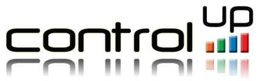
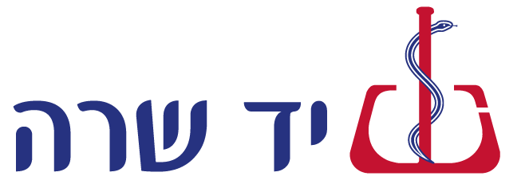

Controlup - Current
As a founding member of the DevOps Team at Controlup, my main mission is to create automated pipelines and enhance DevOps practices and automation across all of Controlup software and services.
In my daily work I tinker with the following:
Operating systems: Linux - Ubuntu, CentOS, Redhat, Amazon Linux, Windows Server 2008-2016..
IIS Web Applications, Active Directory Schema Definition (LDIF) automation (wrote a nifty ldif syntax higlighter extension for Visual Studio Code).
Develop managed builds and pipelines using Jenkins, Jenkins Pipelines, Ansible, Terraform, Vault, Octopus Deploy and Visual Studio Team Services.
Manage source code in Hosted VSTS (TFS and Git), migrating new services to Git.
Defining monitoring, alerting and analytics using Splunk, Nagios and Slack.
Infrastructure Automation and Configuration Management using Ansible, Foreman, Puppet and Terraform.
Scripting in Python, Groovy, Bash, Powershell, Ruby and Javascript.
Automation of deployments and maintainance tasks on AWS Cloud services EC2, DynamoDB, S3, RDS, Redshift, EMR, Elasticache, Route53 using VSTS, Jenkins, Python boto3 libary and the AWS CLI.
more about Controlup
Hometalk - 1 Yr.
I was the sole DevOps Engineer at Hometalk.
My responsibilities included ALM tools, server and database infrastructure and automation tasks across the stack.
My major accomplishment at Hometalk was enhancing the Selenium test automation infrastructure by migrating it to Linux and enable multi-node parallel running of the Selenium functional tests.
The project improved reliability and speeded up the tests by a factor of 10.
This enabled the developers to have a much quicker feedback loop on features and as a result, software could be rolled out multiple times a day.
More about Hometalk
Exlibris - 4 Yrs.
Ex Libris, a Proquest company, develops integrated library systems and other library software for the best universities and research libraries around the world.
I worked at Ex Libris for about 4 years in various roles. My main and most recent position at ExLibris was as Cloud Operations Engineer.
I was responsible for cross-platform builds (Linux 32 and 64 bit, Solaris x86 and SPARC and AIX), installation of OS level application layer across most of ExLibris software products.
Working on multiple and highly varying platforms and production environments, both on-premise, at customer location, single and multi-tenant instances in the Exlibris Cloud of over 5K servers and 5 Datacenters in 3 world regions - US, EU, APAC.
This included third line application support and troubleshooting on the application infrastructure level.
More about Exlibris

Yad Sarah - 1 Yr.
Yad Sarah is Israel's largest medical relief non-profit organization with over 5000 active volunteers at any given time.
It was a life experience working in such a special place that helps so many people on a daily basis.
My responsibilities included design and deployment of Microsoft Dynamics CRM management systems for many of the organization's departments.
Additionally, this doubled as my mandatory Israeli civil service - שירות לאומי.
More about Yad Sarah